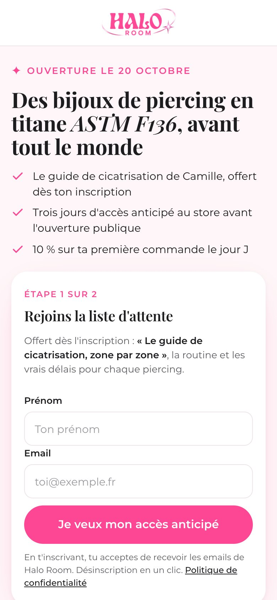
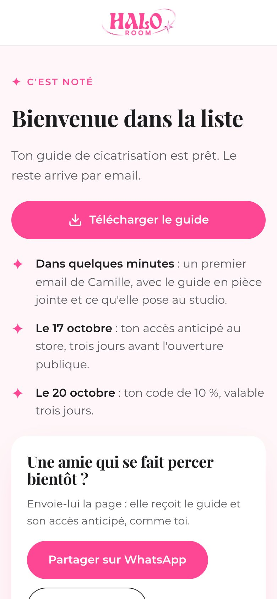
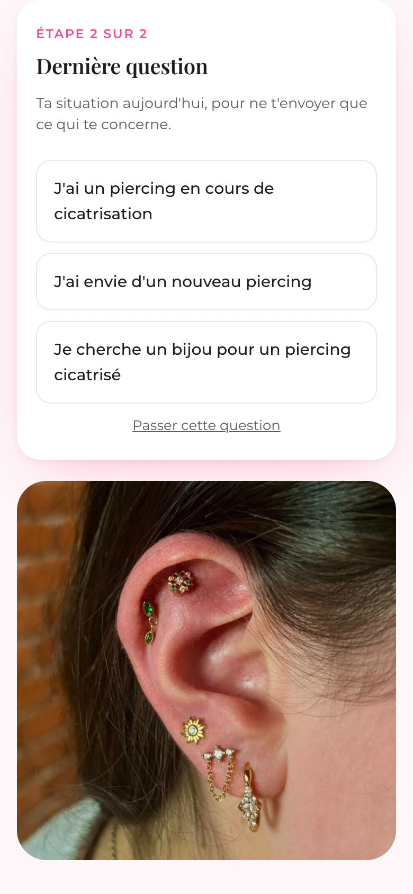
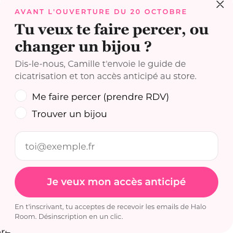
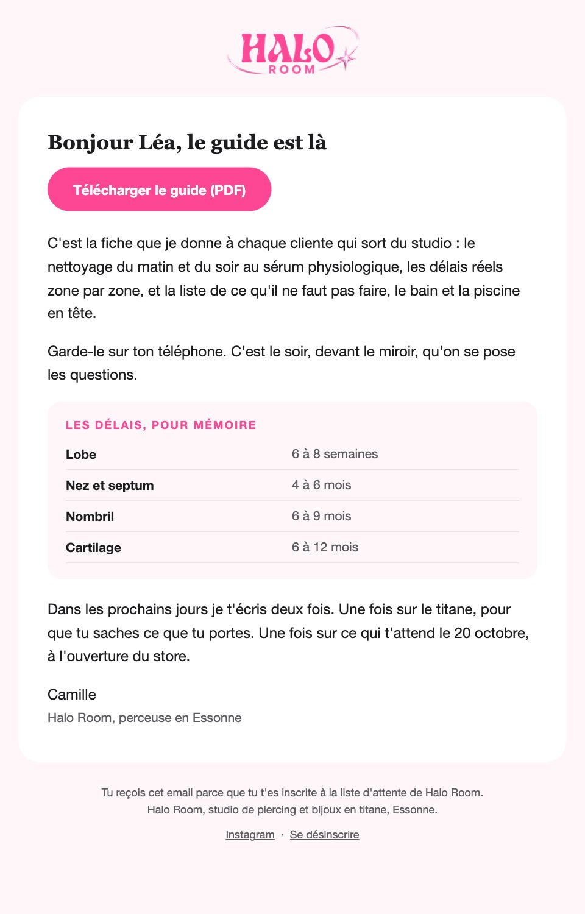
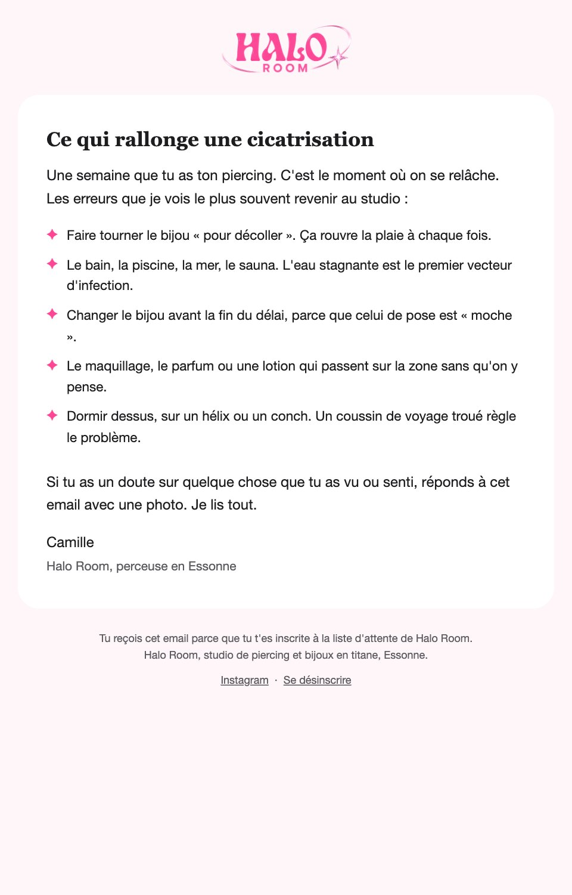
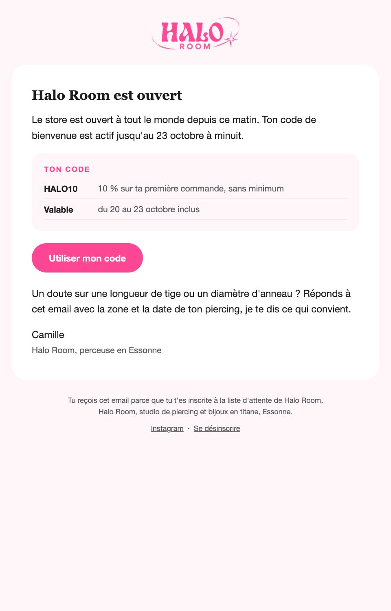
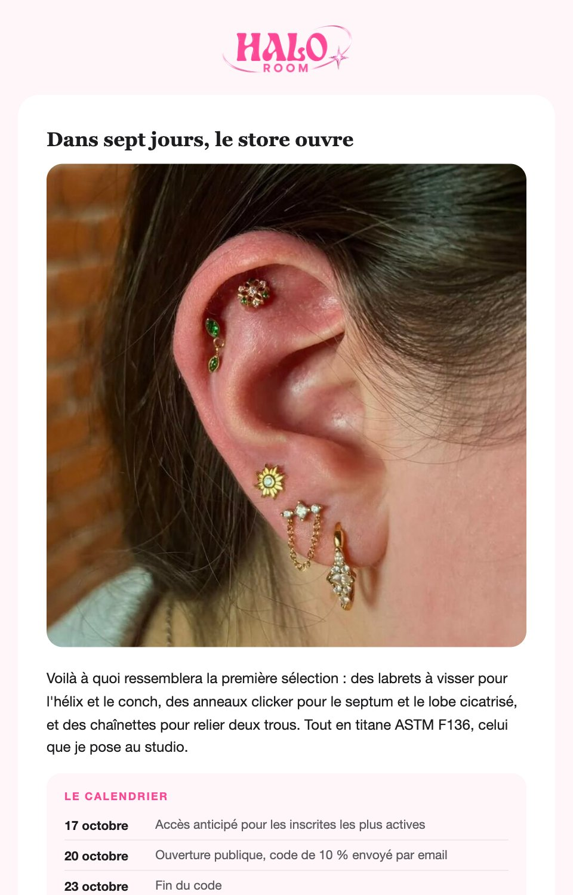

Stratégie d'acquisition CRM
Pour le lancement du e-commerce Halo Room
Charles Neveu · Paolina Roiatti · Jack Palleau

Voici comment nous allons résoudre le problème
Le contexte et le problème
Notre stratégie d'acquisition
Notre cible
Notre dispositif CRM
Nos automatisations
Nos KPI et notre plan d'action
Une perceuse lance son e-commerce
Halo Room arrive à un moment charnière : l'ouverture de sa boutique en ligne, le 20 octobre 2026.
Boutique en ligne pas encore ouverte, zéro client.
Camille et une toute petite équipe.
Limité : chaque euro doit ramener un contact.
Générer ses premiers prospects avant l'ouverture.
Lancement ≠
acquisition
Comment générer suffisamment de prospects qualifiés avec des ressources limitées ?
Comment utiliser le CRM pour transformer les visiteurs du nouveau e-commerce Halo Room en prospects qualifiés, puis en clientes ?
Notre priorité est l'acquisition
Construire une base de leads qualifiés pour alimenter le lancement du e-commerce.
inscrites en quatre semaines
de leads qualifiés
de premières commandes le week-end d'ouverture
Objectifs de départ, recalibrés après la première semaine.
Un tunnel d'acquisition CRM
Chaque étape alimente la suivante, et chaque étape se mesure.
Partir des utilisatrices, pas de suppositions
Recherche utilisateur
Définition du persona
Construction du parcours
Dispositifs d'acquisition
Automatisation CRM
Mesure et optimisation
En rose : ce qui est déjà monté et en ligne cette semaine.
Comprendre la cible
Avant de construire la stratégie, nous devons comprendre les prospects.
Le protocole et le guide d'entretien
Qui : 4 à 5 femmes de 18 à 30 ans, percées ou en projet.
Durée : 15 minutes, visio ou téléphone.
Comment : une personne mène, une autre note.
But : des mots, pas des chiffres.
- Raconte-moi ton dernier piercing : où, pourquoi, comment tu as choisi le studio.
- Comment s'est passée la cicatrisation ? Qu'est-ce qui t'a inquiétée ?
- Où achètes-tu tes bijoux aujourd'hui, et à quel prix ?
- Le titane ASTM F136, ça te dit quelque chose ?
- Quels emails accepterais-tu de recevoir, à quelle fréquence ?
Ce que les entretiens nous apprennent
L'info de cicatrisation est le premier besoin
« Sur TikTok j'ai eu trois avis différents. »
Le titane rassure quand on l'explique
« Si on me dit que c'est ce qu'on met en chirurgie, je comprends tout de suite. »
Les initiées exigent la norme
« Quand le vendeur ne précise pas la matière, je passe mon chemin. »
Des emails rares et utiles
« Un email de temps en temps, quand il y a un vrai truc. »
Lola, 24 ans
Île-de-France · un ou deux piercings · cicatrisation en cours
Une compo vue sur Instagram, un cadeau.
Peur de l'infection, délais flous, conseils contradictoires.
TikTok, Instagram, sa perceuse. 20 à 50 € la pièce.
Un guide utile, puis peu de messages.
« Je veux juste savoir combien de temps ça prend vraiment, sans me faire dire n'importe quoi. »
Construire l'acquisition
Des Ads à la landing page : comment nous transformons le trafic en leads.
600 € de test, trois canaux
Les Ads servent à générer du trafic qualifié vers la landing, pas à vendre à tout le monde. Du 5 au 19 octobre.
Instagram et Facebook, Reels et Stories. Intérêts piercing et bijoux, lookalike dès 100 inscrites.
4 à 6 € par lead · 50 à 75 leads
Recherche : « bijou piercing titane », « piercing Essonne ». On capte une intention existante.
≈ 5 € par lead · ≈ 40 leads
Test sur les questions posées à l'assistant : cicatrisation, titane. Canal nouveau, on apprend.
8 à 12 € par lead · 8 à 12 leads
leads
Coûts en hypothèse. Le 12 octobre, le budget restant bascule vers le canal le moins cher par lead.
Trois angles, et des créatrices
Produit
Les pièces, en gros plan.
Univers
Le studio et Camille.
Problème
La cicatrisation qui traîne.
8 micro-influenceuses
5 000 à 30 000 abonnées. Une pièce en titane contre un Reel ou un TikTok, lien de la landing en bio, UTM par créatrice.
3 vidéos par semaine
Les mêmes sur TikTok et Instagram Reels : routine de cicatrisation, coulisses du studio, pièce en gros plan.
3 concepts × 2 formats × 2 hooks × 2 CTA = 12 variantes testées en Ads.
Chaque euro investi alimente le CRM
Nous ne faisons pas juste « des Ads » : toutes les créas envoient vers la landing, jamais vers le store, et chaque canal a ses UTM pour mesurer son coût par lead.
Le titane des implants, choisi par une perceuse
Femmes de 18 à 30 ans, sud Île-de-France, percées ou en projet, sensibles aux matériaux.
Des bijoux en titane ASTM F136, choisis par une professionnelle, avant tout le monde.
Son email contre le guide, 3 jours d'accès anticipé et 10 % le jour J.
Taux de conversion visiteuse vers inscrite.
zone par zone
Lobe
6 à 8 semaines
Nez et septum
4 à 6 mois
Nombril
6 à 9 mois
Cartilage
6 à 12 mois
- Promesse : la routine et les vrais délais, pour chaque piercing.
- Contenu : le PDF de Camille, envoyé dès l'inscription.
- Bénéfice : une réponse immédiate à la première inquiétude après un piercing.
Une seule sortie : le formulaire
En ligne et fonctionnelle : halo-room-crm.pages.dev
- Logo seul, pas de navigation, un seul CTA répété trois fois.
- Hero : date, titre, trois puces, formulaire visible sans scroller.
- Formulaire en deux étapes : +21 % de conversion (Unbounce).
- Preuves, guide zone par zone, Camille, dernier appel.


Capturer, qualifier, identifier l'intention
Capturer
Étape 1 de la landing : prénom et email. Inscription immédiate, score 10.
Qualifier
Étape 2 : « ta situation » en trois boutons. Score 20, déclenche le nurturing.
Identifier l'intention
Flyout Klaviyo à 50 % de scroll : « RDV ou bijou ? » puis email. En ligne.


Le CRM
Tous les leads captés sont centralisés, segmentés et notés dans Klaviyo.
Ce qu'on sait de chaque lead
| Donnée | D'où elle vient | À quoi elle sert |
|---|---|---|
| Prénom, email | Étape 1 du formulaire | Personnalisation, envoi |
| Situation | Étape 2 : cicatrisation, nouveau, bijou | Déclenche le flux 2, pèse dans le scoring |
| Source d'inscription | Posée par la landing, UTM | Savoir quel canal apporte les leads |
| Lead score | Landing puis flux | Segments nouveau, engagé, qualifié |
| Date de lancement | Posée à l'inscription | Déclencheur du flux 3 |
| Ouvertures, clics | Klaviyo, automatique | Conditions des flux |
Tous les prospects ne reçoivent pas le même message
Nouveau lead
Bienvenue et campagne J-7.
Lead engagé
Nurturing si cicatrisation, campagne, ouverture.
Lead qualifié
Seul à recevoir le flux 3 : accès anticipé et code.
Plus un segment technique « piercing en cours de cicatrisation », qui déclenche le flux 2.
Nous repérons automatiquement les plus intéressées
| Action | Points | Score atteint | Qui le pose |
|---|---|---|---|
| Inscription (étape 1) | +10 | 10 | Landing |
| Réponse « ta situation » (étape 2) | +10 | 20 | Landing |
| Clic dans un mail de bienvenue | +15 | 35 | Flux 1 |
| Situation cicatrisation ou bijou, et clic | +15 | 50 | Flux 1 |
| Clic sur les pièces | +15 | 50 | Flux 2 |
| Aucun clic sur les 3 mails | −10 | 10 | Flux 1 |
Nurturing
Une prospecte n'est pas forcément prête à acheter tout de suite.
Utile d'abord, l'offre ensuite
emails écrits à la main, sans template
flux automatisés : bienvenue, cicatrisation, lancement
campagne d'avant-première, sept jours avant
Bienvenue : tenir la promesse
Déclencheur : ajout à la liste « Waitlist lancement Halo Room ».
Ton guide de cicatrisationLe PDF et les délais par zone
Pourquoi je ne pose que du titane ASTM F136
Le 20 octobre, voilà comment ça se passe
Branche : a cliqué ? Score 35 à 50, sinon 10

Cicatrisation : au bon moment
Déclencheur : entrée dans le segment « piercing en cours de cicatrisation ».
Les 15 premiers jours de ton piercingLa routine matin et soir
Les erreurs qui rallongent une cicatrisation
Quand changer ton bijou, et pour quoi
Branche : a cliqué sur les pièces ? Score 50

Lancement : convertir les qualifiées
Déclencheur : par date, 3 jours avant le 20 octobre, filtré sur un score de 45 et plus.
Ton accès anticipé est ouvertLe lien du store, trois jours avant tout le monde
C'est ouvert : ton code est actifHALO10, 10 % jusqu'au 23
Dernier jour pour ton codeRappel court, sans pression

L'avant-première, sept jours avant
- Concept : montrer les premières pièces, une semaine avant l'ouverture.
- Cible : toute la liste d'attente, quel que soit le score.
- Offre : rappel du code 10 % du 20 au 23 et du parrainage.
- Envoi : mardi 13 octobre, 10 h. Programmée dans Klaviyo, ses clics nourrissent le scoring.

Pilotage
Nous mesurons chaque étape du tunnel, et voici comment nous passons à l'exécution.
Une mesure par étape du tunnel
| Étape | Indicateur | Repère visé |
|---|---|---|
| Acquisition | Inscriptions, conversion de la landing, coût par lead par canal | Médiane 6,6 %, visé 10 % |
| Acquisition | Complétion de l'étape 2 | 60 % et plus |
| Qualification | Ouvertures, clics par email | 40 % d'ouverture, 3 à 5 % de clic |
| Qualification | Part de leads qualifiés | 15 à 25 % avant le 17 octobre |
| Conversion | Commandes HALO10, lead vers client | 5 % des inscrites |
| Hygiène | Désinscriptions, plaintes | Moins de 0,5 % par envoi |
De la stratégie à l'ouverture
Landing sur le domaine, Klaviyo en live, flyout, premières vidéos, bijoux envoyés aux créatrices.
Ads Meta, Google et ChatGPT (600 €), vrais avis clientes, premier point KPI.
Avant-première le 13, accès anticipé le 17, ouverture et code le 20.
Bilan, premier test A/B sur le titre, flux post-achat.
Faire du lancement de Halo Room une première base de prospects qualifiés, grâce au CRM.
Charles Neveu · Paolina Roiatti · Jack Palleau · Halo Room, Essonne